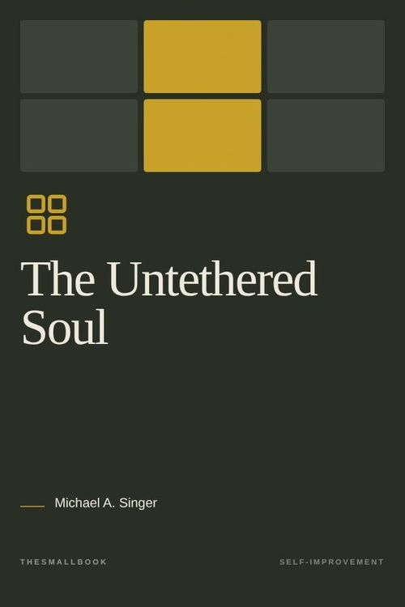

Library › Authors › Michael A. Singer
Books by Michael A. Singer
Michael A. Singer has one book in the library. Every book here is read down to the big idea, the lessons, the lines worth keeping and the actions worth taking. Start with the summary, then buy the full book if it earns a place on your shelf.

The Untethered Soul
2007 · 8 min · 6 lessons
There's a narrator in your head that never stops - and the discovery that you're the LISTENER, not the voice, is the door to freedom.
Singer's question opens the trap: you have a mental roommate - the inner voice narrating, judging, rehearsing, and re-litigating nonstop - and most people spend life mistaking that voice for themselves. The liberation sequence: notice you can HEAR the voice (therefore you aren't it - you're the awareness behind it: the Self as witness); understand SAMSKARAS - stored, unfinished emotional energies that the mind protects and re-triggers (the thorn you build a life around instead of removing); practice the core...
Lessons in the summary
- The Roommate in Your Head: Meeting the Witness
- Thorns and Samskaras: Stop Building Your Life Around the Wound
- Relax and Release: The Moment-of-Disturbance Practice
- Death, the Great Teacher - and Unconditional Happiness
- Letting Go of the Inner Noise: The Practice of Simply Watching
- The Ego Is a Tool, Not an Owner: Serve the Flow of Life
Lines worth keeping
- There is nothing more important to true growth than realizing that you are not the voice of the mind - you are the one who hears it.
- The only permanent solution to your problems is to go inside and let go of the part of you that seems to have so many problems with reality.
- You are not the pain you feel, nor are you the part that periodically stresses out. You are the one who notices these things.
Questions Michael A. Singer helps answer
Read nearby authors next
- Amish Tripathi 6 books
- Robin Sharma 5 books
- A.P.J. Abdul Kalam 4 books
- Adam Grant 4 books
- Cal Newport 4 books
- Chetan Bhagat 4 books
- Jonathan Haidt 3 books
- Ryan Holiday 3 books
Questions Michael A. Singer helps answer
Where should I start with Michael A. Singer? Start with The Untethered Soul: There's a narrator in your head that never stops - and the discovery that you're the LISTENER, not the voice, is the door to freedom.